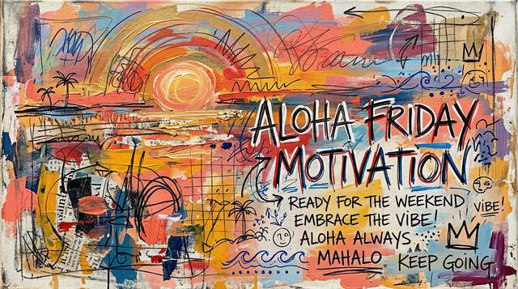
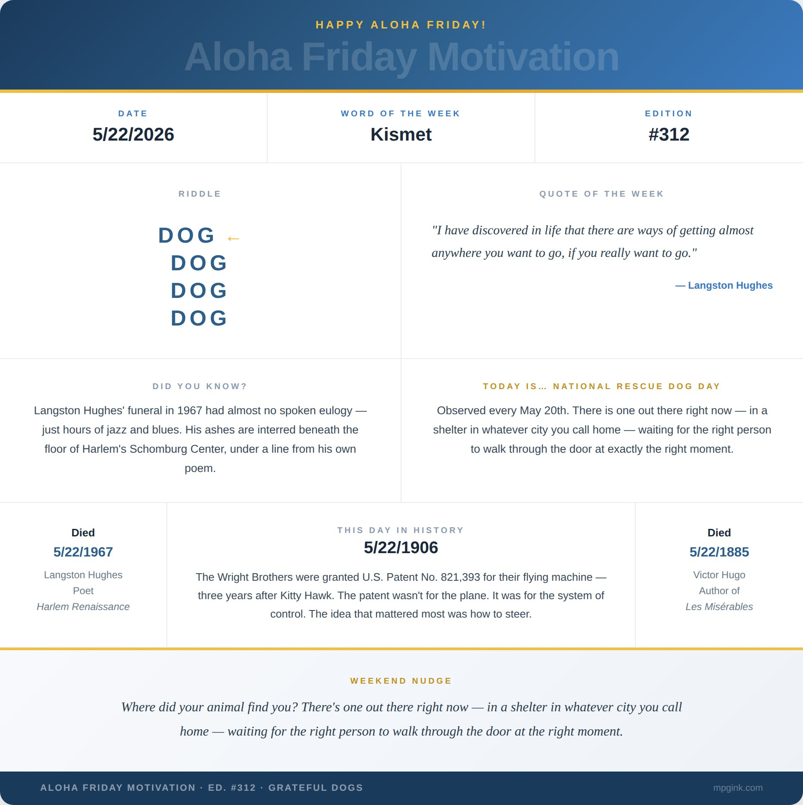

Happy Aloha Friday. 🌺
There is an electricity to Kauai. You feel it the moment you step foot on the ʻĀina. The lush vibrant green, the rugged coastlines — the mana. Yours truly, the hauʻoli haole as I referred to myself a few weeks after moving there, enjoyed five breathtaking years of Garden Island majesty. Kauai as why. I shed that haole skin after a few months, traded my "sounds goods" and "awesomes" for "Rajah thats" and "Aurites" — schooled by adopted ohana who were oh so patient with me. I have Chantel and Chen, Auntie Myrna and Uncle Nestor, Keala, Kellieann, Uncle Erwin, Shaleah, Auntie Nani, and so many others to thank for teaching this mainlander to take it slow. It wasn't easy shedding 30+ years of east coast hustle from my firing neurons, but over time new neural networks started firing and it's never quite been the same. Aloha Friday Motivation was born of that experience and that spirit.
It was a post this week that gave me pause and permission to sail across the ocean in my mind and reminisce about my time on Kauai. A lot happened there. On that tiny island. Five thousand miles from CT. I could talk story for days about the hikes, the surf, the golf, the beaches, the people, the food, my chickens — shout out to Shakiro and Punky Rooster, my lot chickens. So settle in, preferably with a Loco Moco and Akala Fresh Pressed Juice from Kauai Juice Co, while I spin a tale (or tail, rather) about the rescue of Samson Simpson Golia.
This is Part 1 of 3. Over the next three Fridays I'm telling you where my dogs came from. Four dogs. Three editions. One rescue per place we've ever lived.
My wife, and therefore I, had gone vegan for a stretch on Kauai. Leading up to our wedding we hadn't eaten out in months — everything on the island costs what it costs, and after long days running our respective rental car branches in Lihue, we were going home, cooking, calling it done. Tiffany ran Alamo. I managed Enterprise and National. My week started on Thursdays when the cruise ships arrived and the island shifted into a different gear. By the time my Friday rolled around — everyone else's Monday — we were spent.
One evening, about two weeks before our wedding, I was navigating the two-lane highway out of Lihue toward Kapaa. I took a shot and called her on a whim. This was the whole thing — this one phone call. If she'd already hit the Kapaa bypass, she was heading out of town, done, no circling back. But I got lucky. She was just passing the Wailua Municipal golf course.
I talked her into dinner at the Waipouli Beach Resort.
We walked in to find a little dog — black, white, brown, scrappy — tied to a bellhop cart in the lobby. A jackrat, maybe ten pounds. He made one sound. One whimper-whine, the most pathetically effective noise I have ever heard an animal produce. The moment we untied him, it was gone. He never made it again. Not in ten years. He sold it hard and put it away because he didn't need it anymore.
We did not eat dinner. We left with a dog.
His full name is Samson "Right Near the Beach Boy" Simpson Golia. Named for the Grateful Dead — because all four of our dogs are named for Grateful Dead songs. Named secondarily for Samson Simpson from Half Baked, played by Clarence Williams III, and for Dave Chappelle's line introducing him: "Right near the beach, boy." He is the only dog I have ever owned who arrived with his own complete mythology.
Samson and I had four years on Kauai that I will spend the rest of my life trying to adequately describe. We hiked Hoʻopiʻi Falls. We did the Nā Pali Coast via the Kalepa Ridge. We found every waterfall accessible by foot and several that probably weren't. The Okolehao Trail. The Moalepe Trail. He was a trail dog before trail dogs were a thing people talked about. He slept in my hammock. He snuggled with the wild chickens in my yard with an equanimity that still astounds me. He grounded something in me that had only been loosely established, because that was just Tuesday on Kauai.
He was, completely and without question, my dog.
Then we moved to Alabama. And Tiffany got pregnant. Before I had fully processed either of those facts, Samson had already made his decision. He stopped being my dog and became hers. Nine months he did not leave her side. The day our son was born he posted up at the door and hasn't moved from duty since. I don't hold it against him. You can't argue with a dog who already knows.
He's been on every leg since — Alabama, Connecticut, wherever we are now. Comes to work with me every day, sleeps most of it. Hates thunder, hates fireworks, hates anyone touching his paws. Chews his own nails rather than submit to a trim. In Alabama he became our weather dog, sensing a storm a full hour before the sky admitted it. At night he crawls under the covers and sleeps between us like a small person, head jutting out, completely at peace with how it all turned out.
He is ten years old. He was slightly ugly when we found him and he is still slightly ugly and I have never loved anything more in my entire life.
This year we celebrate our 10th wedding anniversary — and Samson's adoption anniversary. Crazy how a simple decision can have such an outsized impact on a life.
Langston Hughes died on this date in 1967. He once wrote: "I have discovered in life that there are ways of getting almost anywhere you want to go, if you really want to go." Samson didn't need the map. He just needed a bellhop cart and the right people to walk through the door.
Kismet.
Next Friday: Ruby Claire and Althea. Connecticut. 2013. A Sunday drive and a cheeseburger that started everything.
Weekend Nudge: Where did your animal find you? There's one out there right now — in a shelter in whatever city you call home — waiting for the right person to walk through the door at the right moment.
Mahalo Nui. 🌺
— Matthew
